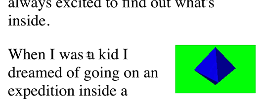
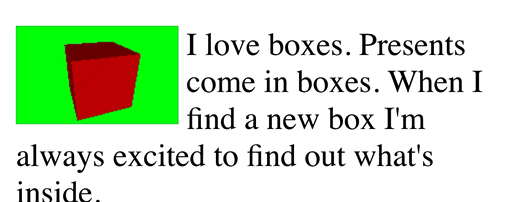

Cet article suppose que vous avez lu l’article sur
moins de code, plus de plaisir
car il utilise la bibliothèque mentionnée là-bas pour
désencombrer l’exemple. Si vous ne comprenez pas
ce que sont les buffers, les tableaux de sommets et les attributs, ou ce que
signifie une fonction nommée twgl.setUniforms pour définir des uniforms,
etc… alors vous devriez probablement revenir en arrière et
lire les bases.
Supposons que vous vouliez dessiner plusieurs vues de la même scène, comment pourrait-on faire ? Une façon serait de rendre vers des textures puis de dessiner ces textures sur le canvas. C’est certainement une façon valide de le faire et il y a des moments où ce pourrait être la bonne chose à faire. Mais, cela nécessite d’allouer des textures, d’y rendre des choses, puis de rendre ces textures sur le canvas. Cela signifie que nous effectuons effectivement un double rendu. Cela peut être approprié, par exemple dans un jeu de course quand on veut rendre la vue dans un rétroviseur, on renverrait ce qui est derrière la voiture vers une texture puis on utiliserait cette texture pour dessiner le rétroviseur.
Une autre façon est de définir le viewport et d’activer le scissor test. C’est idéal pour les situations où nos vues ne se chevauchent pas. Encore mieux, il n’y a pas de double rendu comme dans la solution ci-dessus.
Dans le tout premier article, il est mentionné que nous définissons comment WebGL convertit du clip space vers l’espace pixel en appelant
gl.viewport(left, bottom, width, height);
La chose la plus courante est de définir ces valeurs à 0, 0, gl.canvas.width et gl.canvas.height
respectivement pour couvrir l’intégralité du canvas.
On peut à la place les définir pour couvrir une portion du canvas et cela fera en sorte
que l’on ne dessine que dans cette portion du canvas.
WebGL coupe les sommets dans le clip space.
Comme mentionné précédemment, on définit gl_Position dans notre vertex shader à des valeurs allant de -1 à +1 en x, y, z.
WebGL découpe les triangles et les lignes que l’on passe dans cette plage. Après le découpage,
les paramètres gl.viewport sont appliqués, donc par exemple si on utilise
gl.viewport(
10, // gauche
20, // bas
30, // largeur
40, // hauteur
);
Alors une valeur de clip space x = -1 correspond au pixel x = 10 et une valeur de clip space +1 correspond au pixel x = 40 (un left de 10 plus une largeur de 30) (En réalité c’est une légère simplification, voir ci-dessous)
Donc, après le découpage, si on dessine un triangle, il apparaîtra dans le viewport.
Dessinons notre ‘F’ depuis les articles précédents.
Les vertex et fragment shaders sont les mêmes que ceux utilisés dans les articles sur les projections orthographique et en perspective.
#version 300 es
// vertex shader
in vec4 a_position;
in vec4 a_color;
uniform mat4 u_matrix;
out vec4 v_color;
void main() {
// Multiplier la position par la matrice.
gl_Position = u_matrix * a_position;
// Passer la couleur du sommet au fragment shader.
v_color = a_color;
}
#version 300 es
// fragment shader
precision highp float;
// Passé depuis le vertex shader.
in vec4 v_color;
out vec4 outColor;
void main() {
outColor = v_color;
}
Puis à l’initialisation, nous devons créer le programme et les buffers et le tableau de sommets pour le ‘F’
// configurer les programmes GLSL
// compile les shaders, lie le programme, recherche les emplacements
const programInfo = twgl.createProgramInfo(gl, [vs, fs]);
// Dire à twgl de faire correspondre position avec a_position,
// normal avec a_normal etc..
twgl.setAttributePrefix("a_");
// créer des buffers et les remplir avec des données pour un 'F' 3D
const bufferInfo = twgl.primitives.create3DFBufferInfo(gl);
const vao = twgl.createVAOFromBufferInfo(gl, programInfo, bufferInfo);
Et pour dessiner, créons une fonction à laquelle on peut passer une matrice de projection, une matrice caméra et une matrice world
function drawScene(projectionMatrix, cameraMatrix, worldMatrix) {
// Créer une matrice view depuis la matrice caméra.
const viewMatrix = m4.inverse(cameraMatrix);
let mat = m4.multiply(projectionMatrix, viewMatrix);
mat = m4.multiply(mat, worldMatrix);
gl.useProgram(programInfo.program);
// ------ Dessiner le F --------
// Configurer tous les attributs nécessaires.
gl.bindVertexArray(vao);
// Définir les uniforms
twgl.setUniforms(programInfo, {
u_matrix: mat,
});
// appelle gl.drawArrays ou gl.drawElements
twgl.drawBufferInfo(gl, bufferInfo);
}
puis appelons cette fonction pour dessiner le F.
function degToRad(d) {
return d * Math.PI / 180;
}
const settings = {
rotation: 150, // en degrés
};
const fieldOfViewRadians = degToRad(120);
function render() {
twgl.resizeCanvasToDisplaySize(gl.canvas);
gl.viewport(0, 0, gl.canvas.width, gl.canvas.height);
gl.enable(gl.CULL_FACE);
gl.enable(gl.DEPTH_TEST);
const aspect = gl.canvas.clientWidth / gl.canvas.clientHeight;
const near = 1;
const far = 2000;
// Calculer une matrice de projection en perspective
const perspectiveProjectionMatrix =
m4.perspective(fieldOfViewRadians, aspect, near, far);
// Calculer la matrice de la caméra avec lookAt.
const cameraPosition = [0, 0, -75];
const target = [0, 0, 0];
const up = [0, 1, 0];
const cameraMatrix = m4.lookAt(cameraPosition, target, up);
// faire pivoter le F dans l'espace world
let worldMatrix = m4.yRotation(degToRad(settings.rotation));
worldMatrix = m4.xRotate(worldMatrix, degToRad(settings.rotation));
// centrer le 'F' autour de son origine
worldMatrix = m4.translate(worldMatrix, -35, -75, -5);
drawScene(perspectiveProjectionMatrix, cameraMatrix, worldMatrix);
}
render();
C’est essentiellement le même code que le dernier exemple de l’article sur la perspective sauf que nous utilisons notre bibliothèque pour garder le code plus simple.
Maintenant dessinons 2 vues du ‘F’ côte à côte
en utilisant gl.viewport
function render() {
twgl.resizeCanvasToDisplaySize(gl.canvas);
- gl.viewport(0, 0, gl.canvas.width, gl.canvas.height);
gl.enable(gl.CULL_FACE);
gl.enable(gl.DEPTH_TEST);
// on va diviser la vue en 2
- const aspect = gl.canvas.clientWidth / gl.canvas.clientHeight;
+ const effectiveWidth = gl.canvas.clientWidth / 2;
+ const aspect = effectiveWidth / gl.canvas.clientHeight;
const near = 1;
const far = 2000;
// Calculer une matrice de projection en perspective
const perspectiveProjectionMatrix =
m4.perspective(fieldOfViewRadians, aspect, near, far);
+ // Calculer une matrice de projection orthographique
+ const halfHeightUnits = 120;
+ const orthographicProjectionMatrix = m4.orthographic(
+ -halfHeightUnits * aspect, // gauche
+ halfHeightUnits * aspect, // droite
+ -halfHeightUnits, // bas
+ halfHeightUnits, // haut
+ -75, // near
+ 2000); // far
// Calculer la matrice de la caméra avec lookAt.
const cameraPosition = [0, 0, -75];
const target = [0, 0, 0];
const up = [0, 1, 0];
const cameraMatrix = m4.lookAt(cameraPosition, target, up);
let worldMatrix = m4.yRotation(degToRad(settings.rotation));
worldMatrix = m4.xRotate(worldMatrix, degToRad(settings.rotation));
// centrer le 'F' autour de son origine
worldMatrix = m4.translate(worldMatrix, -35, -75, -5);
+ const {width, height} = gl.canvas;
+ const leftWidth = width / 2 | 0;
+
+ // dessiner à gauche avec la caméra orthographique
+ gl.viewport(0, 0, leftWidth, height);
+
+ drawScene(orthographicProjectionMatrix, cameraMatrix, worldMatrix);
+ // dessiner à droite avec la caméra en perspective
+ const rightWidth = width - leftWidth;
+ gl.viewport(leftWidth, 0, rightWidth, height);
drawScene(perspectiveProjectionMatrix, cameraMatrix, worldMatrix);
}
Vous pouvez voir ci-dessus qu’on définit d’abord le viewport pour couvrir la moitié gauche du canvas, on dessine, puis on le définit pour couvrir la moitié droite et on dessine. Sinon on dessine la même chose des deux côtés sauf qu’on change la matrice de projection.
Effaçons les deux côtés avec des couleurs différentes
D’abord, dans drawScene, appelons gl.clear
function drawScene(projectionMatrix, cameraMatrix, worldMatrix) {
+ // Effacer le canvas ET le depth buffer.
+ gl.clear(gl.COLOR_BUFFER_BIT | gl.DEPTH_BUFFER_BIT);
...
Puis définissons les couleurs d’effacement avant d’appeler drawScene
const {width, height} = gl.canvas;
const leftWidth = width / 2 | 0;
// dessiner à gauche avec la caméra orthographique
gl.viewport(0, 0, leftWidth, height);
+ gl.clearColor(1, 0, 0, 1); // rouge
drawScene(orthographicProjectionMatrix, cameraMatrix, worldMatrix);
// dessiner à droite avec la caméra orthographique
const rightWidth = width - leftWidth;
gl.viewport(leftWidth, 0, rightWidth, height);
gl.clearColor(0, 0, 1, 1); // bleu
+ drawScene(perspectiveProjectionMatrix, cameraMatrix, worldMatrix);
Oups, que s’est-il passé ? Pourquoi n’y a-t-il rien à gauche ?
Il s’avère que gl.clear ne regarde pas les paramètres viewport.
Pour corriger cela, nous pouvons utiliser le scissor test.
Le scissor test nous permet de définir un rectangle. Tout
ce qui est en dehors de ce rectangle ne sera pas affecté si le scissor
test est activé.
Le scissor test est désactivé par défaut. On peut l’activer en appelant
gl.enable(gl.SCISSOR_TEST);
Comme le viewport, il prend par défaut la taille initiale du canvas
mais on peut le définir avec les mêmes paramètres que le viewport en appelant
gl.scissor comme dans
gl.scissor(
10, // gauche
20, // bas
30, // largeur
40, // hauteur
);
Donc ajoutons-les
function render() {
twgl.resizeCanvasToDisplaySize(gl.canvas);
gl.enable(gl.CULL_FACE);
gl.enable(gl.DEPTH_TEST);
+ gl.enable(gl.SCISSOR_TEST);
...
const {width, height} = gl.canvas;
const leftWidth = width / 2 | 0;
// dessiner à gauche avec la caméra orthographique
gl.viewport(0, 0, leftWidth, height);
+ gl.scissor(0, 0, leftWidth, height);
gl.clearColor(1, 0, 0, 1); // rouge
drawScene(orthographicProjectionMatrix, cameraMatrix, worldMatrix);
// dessiner à droite avec la caméra orthographique
const rightWidth = width - leftWidth;
gl.viewport(leftWidth, 0, rightWidth, height);
+ gl.scissor(leftWidth, 0, rightWidth, height);
gl.clearColor(0, 0, 1, 1); // bleu
drawScene(perspectiveProjectionMatrix, cameraMatrix, worldMatrix);
}
et maintenant ça devrait fonctionner.
Bien sûr, vous n’êtes pas limité à dessiner la même scène. Vous pouvez dessiner ce que vous voulez dans chaque vue.
C’est une bonne solution pour simuler plusieurs canvas. Supposons que vous vouliez créer un écran de sélection de personnage pour un jeu et que vous vouliez afficher des modèles 3D de chaque tête dans une liste pour que l’utilisateur puisse en sélectionner un. Ou supposons que vous vouliez créer un site e-commerce et afficher des modèles 3D de chaque produit dans la page en même temps.
La façon la plus évidente de faire cela serait de mettre un <canvas>
à chaque endroit où vous voulez afficher un élément. Malheureusement, vous rencontrerez
une série de problèmes.
Premièrement, chaque canvas nécessiterait un contexte WebGL différent. Les contextes WebGL ne peuvent pas partager des ressources, vous devriez donc compiler des shaders pour chaque canvas, charger des textures pour chaque canvas, uploader de la géométrie pour chaque canvas.
Un autre problème est que la plupart des navigateurs ont une limite sur le nombre de canvas simultanés qu’ils supportent. Pour beaucoup, c’est aussi bas que 8. Cela signifie que dès que vous créez un contexte webgl sur le 9ème canvas, le premier canvas perdra son contexte.
On peut contourner ces problèmes en créant juste 1 grand canvas
qui couvre toute la fenêtre. On mettra ensuite un
<div> de remplacement à chaque endroit où on veut dessiner un élément. On peut utiliser
element.getBoundingClientRect
pour savoir où définir le viewport et le scissor pour
dessiner dans cette zone.
Cela résoudra les deux problèmes mentionnés ci-dessus. On n’aura qu’un seul contexte webgl, on peut donc partager les ressources et on ne tombera pas sur la limite de contexte.
Créons un exemple.
D’abord, créons un canvas qui va en arrière-plan avec du contenu qui va devant. D’abord le HTML
<body>
<canvas id="canvas"></canvas>
<div id="content"></div>
</body>
Puis le CSS
body {
margin: 0;
}
#content {
margin: 10px;
}
#canvas {
position: absolute;
top: 0;
width: 100vw;
height: 100vh;
z-index: -1;
display: block;
}
Maintenant créons quelques choses à dessiner.
// créer des buffers et les remplir avec des données pour diverses choses.
const bufferInfosAndVAOs = [
twgl.primitives.createCubeBufferInfo(
gl,
1, // largeur
1, // hauteur
1, // profondeur
),
twgl.primitives.createSphereBufferInfo(
gl,
0.5, // rayon
8, // subdivisions autour
6, // subdivisions vers le bas
),
twgl.primitives.createTruncatedConeBufferInfo(
gl,
0.5, // rayon du bas
0, // rayon du haut
1, // hauteur
6, // subdivisions autour
1, // subdivisions vers le bas
),
].map((bufferInfo) => {
return {
bufferInfo,
vao: twgl.createVAOFromBufferInfo(gl, programInfo, bufferInfo),
};
});
Maintenant créons 100 éléments html. Pour chacun, on créera un div conteneur et à l’intérieur une vue et une étiquette. La vue est juste un div vide où on veut dessiner l’élément.
function createElem(type, parent, className) {
const elem = document.createElement(type);
parent.appendChild(elem);
if (className) {
elem.className = className;
}
return elem;
}
function randArrayElement(array) {
return array[Math.random() * array.length | 0];
}
function rand(min, max) {
if (max === undefined) {
max = min;
min = 0;
}
return Math.random() * (max - min) + min;
}
const contentElem = document.querySelector('#content');
const items = [];
const numItems = 100;
for (let i = 0; i < numItems; ++i) {
const outerElem = createElem('div', contentElem, 'item');
const viewElem = createElem('div', outerElem, 'view');
const labelElem = createElem('div', outerElem, 'label');
labelElem.textContent = `Élément ${i + 1}`;
const {bufferInfo, vao} = randArrayElement(bufferInfosAndVAOs);
const color = [rand(1), rand(1), rand(1), 1];
items.push({
bufferInfo,
vao,
color,
element: viewElem,
});
}
Stylisons ces éléments comme suit
.item {
display: inline-block;
margin: 1em;
padding: 1em;
}
.label {
margin-top: 0.5em;
}
.view {
width: 250px;
height: 250px;
border: 1px solid black;
}
Le tableau items a un bufferInfo, un vao, une color et un element
pour chaque élément. On boucle sur tous les éléments un par un et on appelle
element.getBoundingClientRect
et on utilise le rectangle retourné pour voir si cet élément intersecte
avec le canvas. Si c’est le cas, on définit le viewport et le scissor pour
correspondre, puis on dessine cet objet.
function render(time) {
time *= 0.001; // convertir en secondes
twgl.resizeCanvasToDisplaySize(gl.canvas);
gl.enable(gl.CULL_FACE);
gl.enable(gl.DEPTH_TEST);
gl.enable(gl.SCISSOR_TEST);
// déplacer le canvas en haut de la position de défilement actuelle
gl.canvas.style.transform = `translateY(${window.scrollY}px)`;
for (const {bufferInfo, vao, element, color} of items) {
const rect = element.getBoundingClientRect();
if (rect.bottom < 0 || rect.top > gl.canvas.clientHeight ||
rect.right < 0 || rect.left > gl.canvas.clientWidth) {
continue; // hors écran
}
const width = rect.right - rect.left;
const height = rect.bottom - rect.top;
const left = rect.left;
const bottom = gl.canvas.clientHeight - rect.bottom - 1;
gl.viewport(left, bottom, width, height);
gl.scissor(left, bottom, width, height);
gl.clearColor(...color);
const aspect = width / height;
const near = 1;
const far = 2000;
// Calculer une matrice de projection en perspective
const perspectiveProjectionMatrix =
m4.perspective(fieldOfViewRadians, aspect, near, far);
// Calculer la matrice de la caméra avec lookAt.
const cameraPosition = [0, 0, -2];
const target = [0, 0, 0];
const up = [0, 1, 0];
const cameraMatrix = m4.lookAt(cameraPosition, target, up);
// faire pivoter l'élément
const rTime = time * 0.2;
const worldMatrix = m4.xRotate(m4.yRotation(rTime), rTime);
drawScene(perspectiveProjectionMatrix, cameraMatrix, worldMatrix, bufferInfo, vao);
}
requestAnimationFrame(render);
}
requestAnimationFrame(render);
J’ai fait en sorte que le code ci-dessus utilise une boucle requestAnimationFrame
pour pouvoir animer les objets. J’ai aussi passé quel bufferInfo dessiner
à drawScene. Le shader utilise juste les normales comme couleurs pour garder
les shaders simples. Si j’ajoutais de l’éclairage,
le code deviendrait beaucoup plus compliqué.
Bien sûr, vous pourriez dessiner des scènes 3D complètes ou autre chose pour chaque élément. Tant que vous définissez correctement le viewport et le scissor, puis configurez votre matrice de projection pour correspondre à l’aspect de la zone, ça devrait fonctionner.
Une autre chose notable dans le code est qu’on déplace le canvas avec cette ligne
gl.canvas.style.transform = `translateY(${window.scrollY}px)`;
Pourquoi ? On pourrait à la place définir le canvas avec position: fixed; auquel cas
il ne défilerait pas avec la page. La différence serait subtile.
Le navigateur essaie de faire défiler la page aussi fluidement que possible. Cela pourrait être
plus rapide qu’on ne peut dessiner nos objets. C’est pourquoi on a 2 options.
Utiliser un canvas à position fixe
Dans ce cas, si on ne peut pas mettre à jour assez vite, le HTML devant le canvas défilera mais le canvas lui-même ne défilera pas, donc pendant quelques instants ils seront désynchronisés

Déplacer le canvas sous le contenu
Dans ce cas, si on ne peut pas mettre à jour assez vite, le canvas défilera en synchronisation avec le HTML mais les nouvelles zones où on veut dessiner des choses seront vides jusqu’à ce qu’on ait la chance de dessiner.

C’est la solution utilisée ci-dessus
Espérons que cet article vous a donné quelques idées sur comment dessiner plusieurs vues. Nous utiliserons ces techniques dans quelques futurs articles où être capable de voir plusieurs vues est utile pour la compréhension.